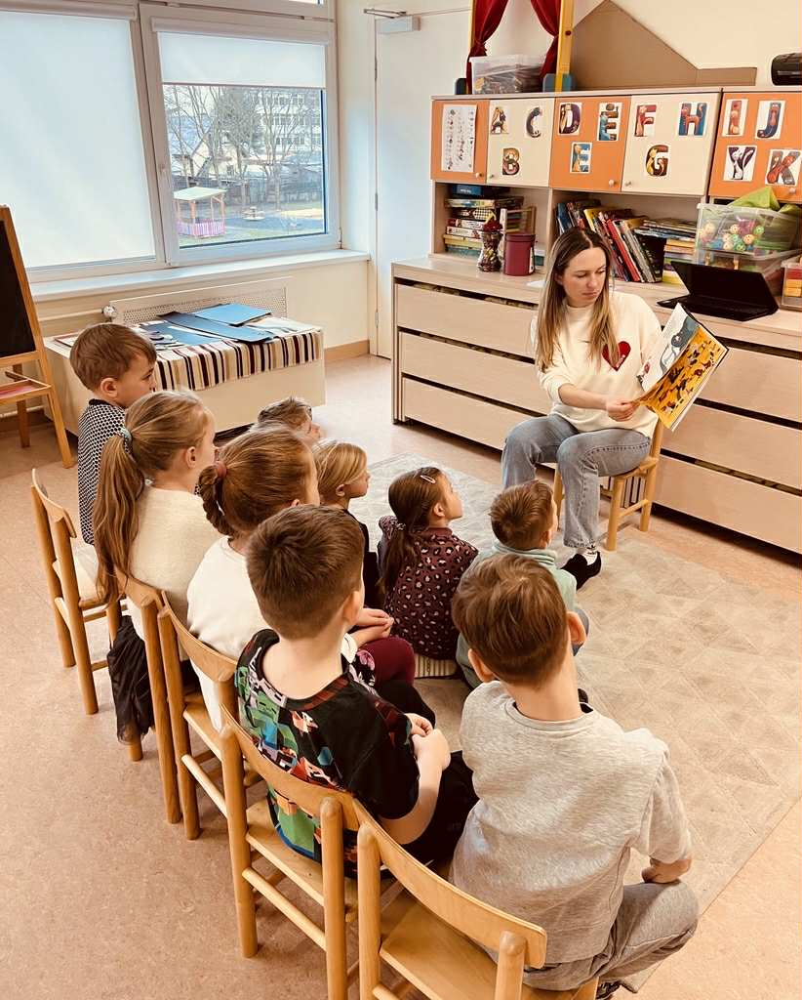
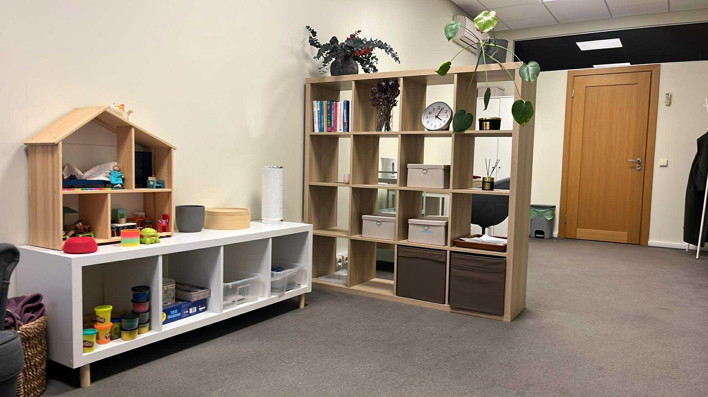
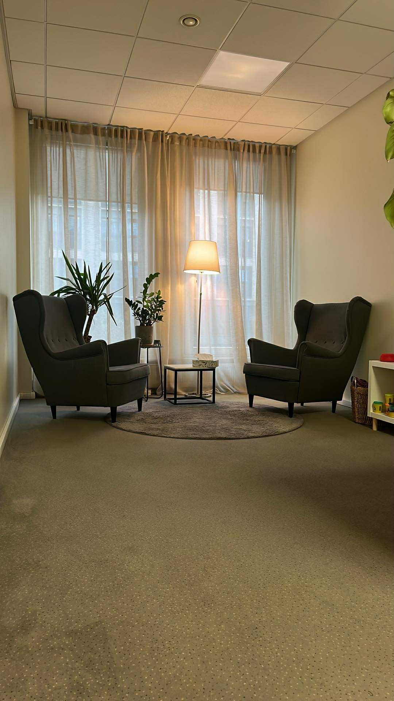

Liana Sapegina
Profesionali ir empatiška pagalba vaikams, paaugliams ir jų tėvams.
+370 600 12345
info@lianasapegina.lt
Konstitucijos pr. 12, Vilnius

Profesionali ir empatiška pagalba vaikams, paaugliams ir jų tėvams.
Tai, kad savo gyvenimą ir profesiją norėsiu sieti su darbu su žmonėmis, o ypač su vaikais, pajutau dar vaikystėje – maždaug penkerių metų. Nuo tada turėjau dvi svajones: dirbti su vaikais ir dainuoti. Abi jas vienaip ar kitaip išbandžiau, o jų nušviestu keliu keliauju iki šiol.
Savo profesinį kelią pradėjau dirbdama mokytoja ikimokyklinio ugdymo įstaigoje. Vėliau baigiau psichologijos studijas ir pradėjau dirbti psichologe. Ši patirtis leido iš labai arti pažinti vaikų pasaulį – stebėti jų elgesį, charakterio ir temperamento ypatumus, raidos procesus bei tai, kaip visa tai veikia jų santykius su aplinka, kitais žmonėmis ir savimi.
Dirbdama vis aiškiau matau, kokia didelė galia slypi vaikystėje ir ankstyvose patirtyse. Taip pat – kokią svarbą turi suaugusiojo buvimas šalia: pakankamai saugus, jautrus ir brandus santykis su vaiku gali tapti stipria atrama jo augimui ir emocinei raidai.

Jaučiu didelę prasmę dirbdama su vaikais, paaugliais ir jų šeimomis, nes tikiu ankstyvosios pagalbos svarba. Kai sunkumai pastebimi ir sprendžiami kuo anksčiau, vaikui atsiveria daugiau galimybių sėkmingai vystytis – geriau suprasti save, kurti ryšius su kitais, lengviau mokytis, siekti savo tikslų ir pasitikėti savimi bei aplinka.
Konsultavimo procese siekiu sukurti saugią erdvę, kurioje vaikas galėtų išreikšti savo jausmus ir mintis bei pamažu suprasti, kaip jie gali būti susiję su jo elgesiu ar patiriamais sunkumais. Tikiu ryšio gydančia galia. Tai patiriu ir savo asmeninėje psichoterapijoje, ir kasdien dirbdama su vaikais bei jų šeimomis. Kartais jau pats patyrimas būti išgirstam, priimtam ir suprastam gali tapti svarbiu žingsniu pokyčio link.
Pirmųjų susitikimų metu siekiame geriau suprasti sunkumus, dėl kurių kreipiamasi. Dažniausiai susitinku su tėvais, o taip pat skiriame kelis susitikimus su vaiku ar paaugliu. Šis etapas padeda geriau pažinti vaiko situaciją, jo patiriamus išgyvenimus bei nuspręsti, kokia pagalba galėtų būti naudingiausia.
Konsultacijų metu vaikai gali žaisti, piešti, kalbėtis ar užsiimti kitomis jiems natūraliomis veiklomis. Per šias veiklas jie išreiškia savo patirtis, jausmus ir vidinius išgyvenimus. Mažesniems vaikams pagrindinė raiškos forma dažnai yra žaidimas. Vaikui augant vis svarbesnis tampa pokalbis ir refleksija.
Tėvų ar globėjų dalyvavimas yra svarbi pagalbos proceso dalis. Reguliarūs susitikimai su tėvais padeda geriau suprasti vaiko situaciją, aptarti jo raidą, santykius bei ieškoti būdų, kaip tėvai galėtų palaikyti vaiką kasdienybėje, stiprinti tarpusavio ryšį ir kurti saugesnę emocinę aplinką. Vaiko konsultacijos dažniausiai vyksta kartą per savaitę.
Pagalbos trukmė priklauso nuo vaiko patiriamų sunkumų pobūdžio, jų trukmės ir individualios situacijos. Kartais pakanka kelių konsultacijų ar trumpesnio konsultavimo laikotarpio, kai sprendžiami konkretūs klausimai. Kitais atvejais gali būti naudinga ilgesnė psichoterapija tvaresniems vidiniams pokyčiams.
Mano darbo kabinetas sukurtas taip, kad vaikai jaustųsi jaukiai ir saugiai. Čia gausu žaislų ir priemonių, kurios padeda atsiverti ir tyrinėti savo vidinį pasaulį per žaidimą.

